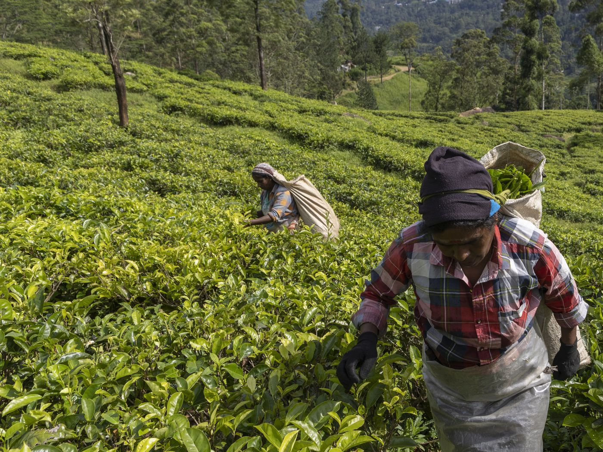
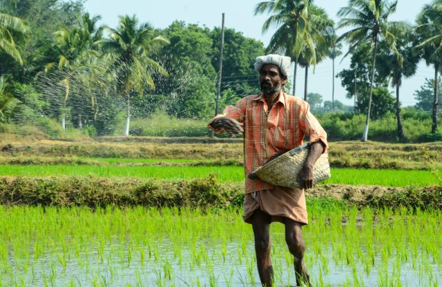

Blog

Sustainable Farming Practices in Sri Lanka
Sri Lanka's rich agricultural heritage has been sustained for centuries, with farming practices deeply intertwined with the culture and livelihoods of its people.
Read More

Challenges and Opportunities in Sri Lanka's Rice Farming
Rice is a staple crop in Sri Lanka, and rice farming plays a crucial role in the country's agriculture sector.
Read More
Sri Lanka's Spice Farming Heritage
Sri Lanka is renowned for its spice farming heritage, producing some of the world's most sought-after spices.
Read More